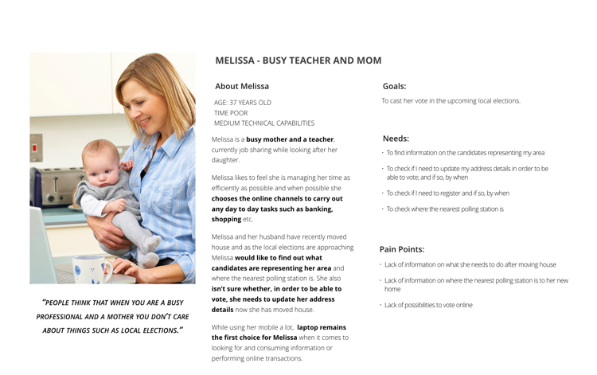
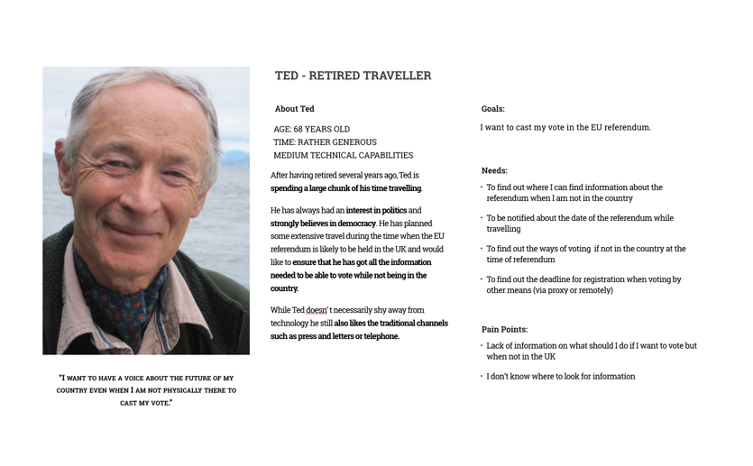
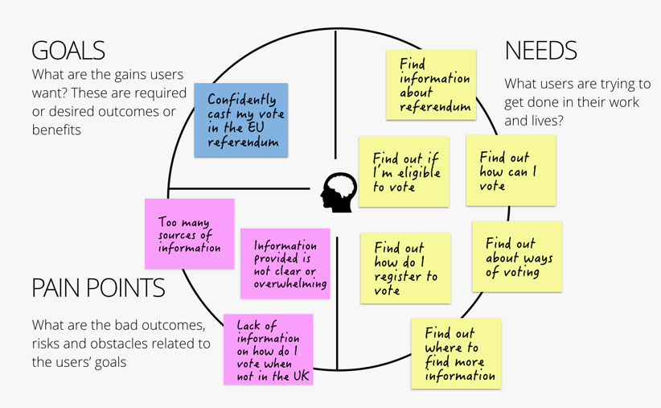

UX Research
Get to know your users first and find out about their needs.
Competitve Analysis
Although Electoral Commission don't have competitors as such there were a couple of other irganisations whose objectives are similar to that of EC. One of them being Government Digital Services (GDS) and their digital first policy and user centred approach as well Democracty club who leverage the data offering users a quick and easy way of finding their local polling station.
Personas
As part of some earlier work carried out for Electoral Commission we had looked at their target audiences identifying three difefrent types of users with different goals and needs. Having that information to hand was also helpful in the design process.



Story mapping
Before moving into design phase we invited Electoral Commission to a workshop during which we engaged them into a collaborative story mapping exercise. During this process we looked at our users and their goals specific to the EU referendum campaign and identified the different features and activites they might be likely to require or be involved in. This allowed us to get a visual representation of the requirements and identify the key tasks the users are likely to perform when visiting the campaign site.